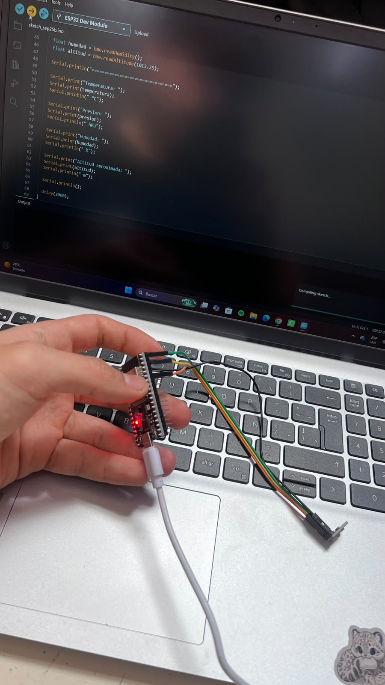
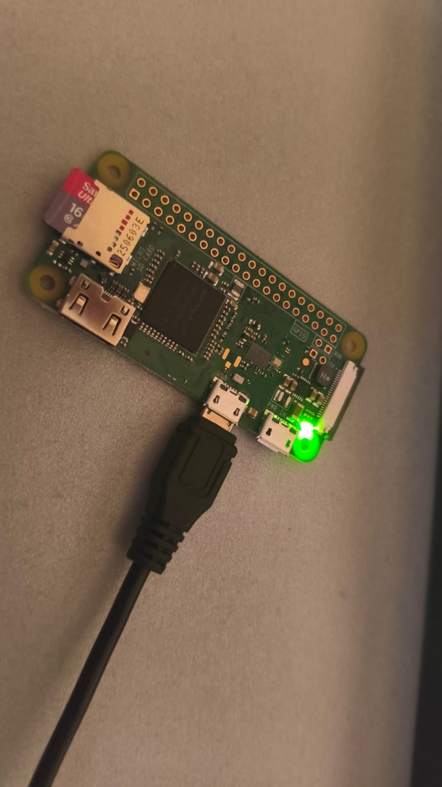

La misión primaria mide presión atmosférica y temperatura con un sensor BME280. Las primeras lecturas no coincidían con los valores esperados, así que el equipo consiguió otro sensor para continuar las pruebas. También recibimos una Raspberry Pi Zero W y la cámara Raspberry Pi AI Camera para la misión secundaria.

